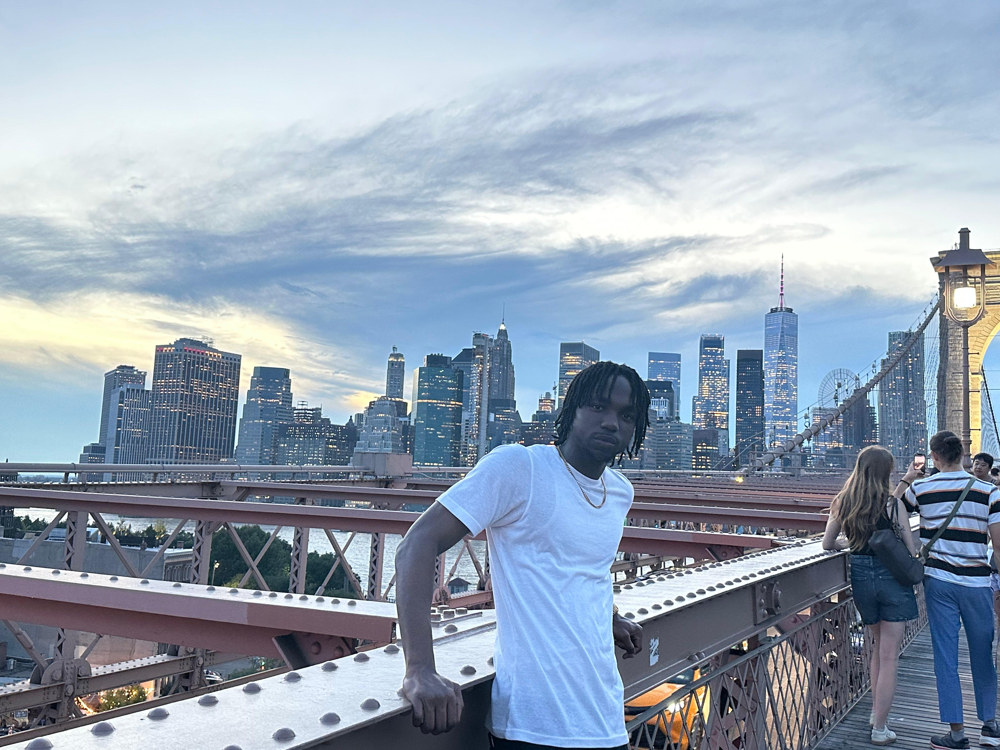

Hello! My name is Damonick Dixon, I am 20 years old.
I am a person who loves fitness, specifically at home workouts.In Addition, I am a calm, cheerful guy, and fun depedning on who I am round.
I have a great interest in travelling to different countries to explore and experience the different cultures that are out there.
In my leisure time I make youtube videos, play video games with my friends, listen to music and read books.
I attend the University of Technology(Utech), where I am pursuing a degree in Bachelor of Science in Computing.
Currently pursuing Bachelor of Science in Computer Science Utech University, Kingston, Jamaica. My final year of university will be the academic school year of 2029.
My current course work includes: Physics, Statistics, Web Programming, Database Design and Academic Literature for Undergraduates
High School HONOURS I Previously attended the Knox College or "the Big blue school on the hill" in Spaulding, Clarendon, Jamaica. I graduated in July 2023 with Twelve(11) subjects and a High School leaving certificate.
During my time at Knox College I was apart of Cadet and Key Club.
Listening music, Learning & Making Youtube Videos. At this time I would decide on which area of the body i should target and make a video on for viewers to see.
Another hobby I enjoy is Travelling.Going on Vacation is necessary to me. It allows me a new space and a fresh mind to see what is out in the wolrd apart from what i'm used to in my everyday life. It may simple be another culture.
Finally, my favourite and most passionate hobby is listening to music or doing anything with music in the background. It allows me the chance the express my mood more and it helps me to focus and learn while i listen to the lyrics that an artiste express. Music is something i truly love and i found myself with passion since i've ten (10). Since that age, i cannot forget a day that went by that i didn't listen music.